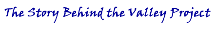

The first Web version of the Valley Project appeared as a research report on the IATH website in 1993. The University had provided us with some start-up money, but we were quickly exhausting that. Fortunately, we found a partner in the Woodrow Wilson Birthplace and Museum in Staunton, Virginia. They saw possibilities in the Valley Project for enriching the understanding of their visitors, and envisioned a terminal in the Museum that would allow staff and visitors the opportunity to explore daily life in the town. The Birthplace and Museum secured a grant of six thousand dollars from the Virginia Foundation for the Humanities so that we could continue building the project; we, in turn, happily agreed to set up a workstation there running the Valley Project. The Augusta Archive, created for the Museum and built from the outset for the World Wide Web, was the true prototype of the Valley Project.
As we prepared to debut the Augusta Archive in the fall we put on a big push in the summer of 1994. Anne Rubin oversaw six other students who joined us. We refined the search tools and learned how to make more attractive images. We finished the 1860 census and tagged newspapers through the late 1850s. We added a transcription of the registry of free blacks in Staunton and found a few diaries and letters in UVa's library. We made maps of the neighborhoods and connected images of historic houses to a painting of Staunton from 1857. The site began to look more coherent as we learned how to work on the Web. Our friends at the Wilson Birthplace in Staunton eagerly agreed to cosponsor what we called a "History Harvest," an effort to collect Augusta letters and diaries held in private hands, in the fall of 1994.
By this time, the World Wide Web was spreading rapidly, giving us new audiences every day, but, ironically, it also limited what we could do. The limits of bandwidth faced by those who viewed the Web on modems--pretty much everyone except those in universities and corporations at that time--meant that we could not use images effectively. Many minutes passed while our newspaper images, maps, or photographs slowly filled in screens. That was why the Valley Project teamed up with Steve Forman at W.W. Norton to produce a CD-ROM version of the Valley Project. A CD-ROM would allow us to create a truly multimedia environment, with rich color photographs, music, voice, and animations, that the early Web could not deliver.
Despite our good fortune on the funding front, so many people working so many hours quickly consumed all the money we could raise. The University of Virginia had generously provided more funds, but there was only one source for a large enough supply of funding to sustain the project: the National Endowment for the Humanities. We had submitted an application in 1995, but despite positive reviews it had not been funded because the proposal did not fit comfortably into any division of the NEH. By 1996, however, in recognition of the growing possibilities of digital media, the Endowment had created a new category called Teaching with Technology. The Valley Project seemed a good fit. The anonymous reviewers for the NEH were all enthusiastic about the proposal and we won the grant, for over two hundred thousand dollars.
In 1996, Anne Rubin left the Valley Project to resume work on her dissertation. She had taken the previous year off from graduate work to run the enterprise full time, directing the efforts of numerous graduate students, but was now ready to finish her own work. William G. Thomas III ("Will"), a recent Ph.D graduate of UVa, took her place at head of the Valley team. Forging ahead into the Civil War years of the project, Will helped develop the Valley CD-ROM, led teams to transcribe thousands of Compiled Service Records at the National Archives, scanned hundreds of photographs at the United States Army Military Institute library in Carlisle, Pennsylvania, and located diaries and letters in Franklin, Augusta, and in libraries all over the country. Meanwhile, people continued to write us about sources they were eager to share from their family collections.
Though people's access to the Web continued to improve, the great majority of people reached the Valley Project through a telephone line and we could not burden the site with large images or elaborate navigation. Will and Michael Mullins, a visiting graduate student from Australia, suggested that we use a floor plan as a way to convey to visitors the sense that they were working with an archive with different "rooms." With a single black-and-white octagonal image, a floor plan by Thomas Jefferson, we provided an overview of the entire archive. The octagon immediately became the most visible symbol of the Valley Project.
Andrew J. Torget became the project’s manager in 2002 and marshaled the project to completion. Andrew oversaw the project’s final redesign and overhaul, completed the construction of the Aftermath portion of the archive, and the finished work on numerous other parts of the archive. During these final years, we added thousands of letters and diaries, newspapers and speeches, government and military records to the site while continuing to upgrade the technology that drives the Valley Project. All the Valley letters, diaries, and newspapers have been converted into Extensible Markup Language (XML), which allows the type of full text searching capability that Ayers first envisioned in the Valley's early years. Dozens of maps have been added which utilize Geographic Information Systems technology (GIS), producing detailed images of Augusta and Franklin counties never before possible. Teams of dedicated graduate and undergraduate students at the University of Virginia produced and processed the material that makes up the core of the Valley Project. Generous private gifts from supporters and help from provosts and deans have sustained us as we brought the Valley Project to its conclusion.
Over the years, the site and the CD-ROM together have won two major prizes, including the first eLincoln Prize from the Gilder-Lehrman Institute and Gettysburg College, and acknowledgement from the American Historical Society as the best aid to the teaching of history in the two years before 2002. And the project continues to be featured in publications. The American Historical Review featured a born-digital article by Will Thomas and Edward Ayers, “The Differences Slavery Made,†in its December 2003 issue based entirely on the Valley archive. In 2007, W. W. Norton also published an edited collection of some of the best materials available on the Valley Project, titled Two Communities in the Civil War, edited by Andrew Torget and Edward Ayers.
With the project completed, the University of Virginia Library began processing the Valley Project in 2007 for archiving as part of its permanent digital collections. Subject specialist librarians assessed the content of the Valley of the Shadow collections, and Library technical staff updated text and image files to the current technical standards for digital preservation. As part of the migration, the Valley databases and associated search engines were re-engineered as a Lucene index, with Apache Solr and Cocoon providing a framework for new search and content-retrieval pages. The Library's Digital Collections department also undertook the research and updating of provenance information on collection material, and Digitization Services staff supervised the re-digitizing of the images in the collection. The metadata for collection items was augmented and standardized. The entire site, consisting of some 12,000 files, was consolidated from three servers to a single project, which was migrated to the Library production web environment in the spring of 2009.
Page 1 | Page 2